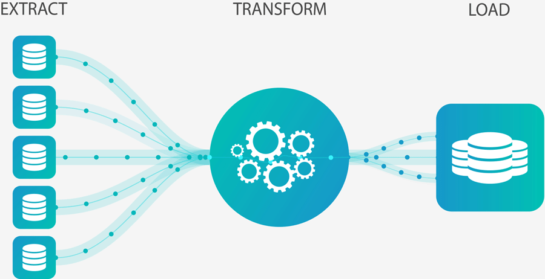

My Name is Irfan, I`m a Data Analyst and here Below you can find my projects for the community and self-development !
I hope it will be useful for you.
If you need help with any problem or a project you want to develop,
please do not hesitate to contact me !
You can reach me through the contact information below or through social media links.


An interactive search engine with selectable preferences for used cars on the market. Created two machine learning models to perform the following for the search engine:
Car price predictions (supervised learning)
Car recommendations (unsupervised learning)

This Tableau project is based on Citibike New Jersey data, offering a comprehensive analysis. Visual analyses conducted on the dataset examine bicycle rental trends, the most heavily used areas, and time frames. Additionally, it includes potential strategies for improving or optimizing the bicycle rental service based on the insights derived from this data.
The project serves as a valuable resource for data-driven decision-making for Citibike New Jersey or similar service providers.

The project you've created provides a significant analysis of the shifts in American film trends before and after the COVID-19 pandemic. It highlights the transition from pre-pandemic dominance of big-budget action films and superhero narratives to a post-pandemic landscape where online streaming platforms and independent productions gained prominence, reflecting changes in audience preferences.
The project meticulously documents the transformation of the film industry in America and examines the impacts of these changes on the sector.
Perform customer segmentation using the KMeans clustering algorithm. Identify univariate, bivariate, and multivariate clusters. Perform summary statistics on these clusters to identify the best marketing group. Data The dataset used for this project can be found in the data/ directory.
It includes relevant information about mall customers, such as demographics, purchasing history, and visit frequency.

This project aims to visualize earthquake occurrences and their magnitudes using Leaflet. Users can explore the distribution of earthquakes on the map to gain insights into earthquake density and geographic patterns. Additionally, it represents earthquakes of different magnitudes with specific icons or colors to facilitate user comprehension.
This project enhances earthquake monitoring and analysis by presenting earthquake activity in a more comprehensible and accessible manner.

Within the scope of the project, ETL processes related to crowdfunding were performed. The data included information about crowdfunding campaigns, contributors' details, and campaign performance. These ETL processes encompassed the extraction of data from crowdfunding platforms, transforming this data into a suitable format for analysis,
and ultimately loading it into relevant databases. This allowed for effective analysis and reporting of crowdfunding campaigns.